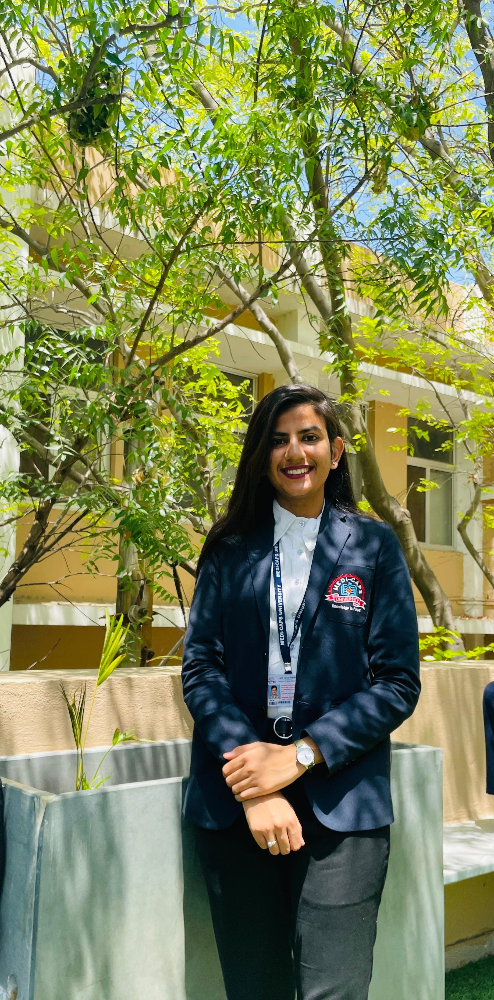

Harshita Patidar

Summary
Seeking a challenging role as an IT professional where I can utilize my technical skills and knowledge acquired through education to contribute effectively to the growth of the organization while enhancing my own expertise in the field.
Education
- Pursuing MCA from Medicaps university , Indore.
- Passed out BSC(CS) from Vidyodaya Mahavidhyalaya associated by DAVV in 2023.
- Passed out 12th from MP board in 2020.
- Passed out 10th from MP board in 2018.
Work Experience
- I did a 4-week internship at CodSoft on a Java programmer position.(june 2024-july 2024)
- I am doing full stack web development course from Udemy.
Skills
- Communication
- Teamwork
- Time Management
- Problem Solving
- Analytical Skills
Other